1 Introduction
Set Values
Oz 3 provides finite sets of non-negative integers as first-class values and every set value is a subset of the universal set  . The value of 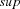 is determined by the actual implementation and in Mozart Oz 3 it is
. The value of 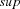 is determined by the actual implementation and in Mozart Oz 3 it is  1.
1.
Set Constraints
A basic set constraint approximates a set value  in three different ways:
in three different ways:
Constraining the lower bound by set
 :
:  . The lower bound contains all elements that are at least contained in the set value.
. The lower bound contains all elements that are at least contained in the set value. Constraining the upper bound by set
: 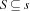. The upper bound contains all elements that are at most contained in the set value. Constraining the cardinality of a set by a finite domain interval
 :
:  . The cardinality constraint determines the minimal and maximal number of elements allowed to be contained in the set.
. The cardinality constraint determines the minimal and maximal number of elements allowed to be contained in the set.
A set constraint denotes a set value if either the lower is equal to the upper bound, the cardinality of the lower bound is equal to the upper bound of the cardinality constraints, or the cardinality of the upper bound is equal to the lower bound of the cardinality constraint.
Non-basic set constraints, as intersection , union  , disjointness , and the like, are provided as propagators. For details on the provided set propagators see Chapter 7 of ``System Modules''.
, disjointness , and the like, are provided as propagators. For details on the provided set propagators see Chapter 7 of ``System Modules''.
Set Constraint Propagation
To explain constraint propagation, assume the basic set constraints: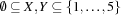 and additionally the following non-basic constraints:  and
and  . Adding the constraints
. Adding the constraints  and 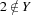 yields the intermediate store
and 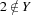 yields the intermediate store  and 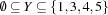. The present non-basic constraints can add even more basic constraints: the disjointness constraint removes 1 from the upper bound of
and 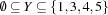. The present non-basic constraints can add even more basic constraints: the disjointness constraint removes 1 from the upper bound of  since 1 was added to the lower bound of
since 1 was added to the lower bound of  . The union constraint adds 2 to the lower bound of since 2 was removed form the upper bound of . After that, propagation has reached a fixed-point and leads to 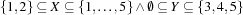. Bringing the cardinality constraint 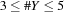 into play determines to 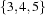 since the upper bound has exactly 3 elements which is the minimal number required by the cardinality constraint. The disjointness constraint then removes 3, 4, 5 from 's upper bound and that way determines to 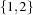.
. The union constraint adds 2 to the lower bound of since 2 was removed form the upper bound of . After that, propagation has reached a fixed-point and leads to 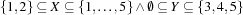. Bringing the cardinality constraint 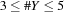 into play determines to 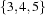 since the upper bound has exactly 3 elements which is the minimal number required by the cardinality constraint. The disjointness constraint then removes 3, 4, 5 from 's upper bound and that way determines to 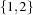.
Connecting Finite Sets and Finite Domains
Set constraints on their own are of limited use, connecting them with finite domain constraints provides much more expressivity. The straightforward way is to connect a finite set variable via the cardinality constraint to a finite domain variable. Another technique is to provide reified versions for various set constraints as containment and the like. But there are further possiblies if the fact that the elements of a set are integers is exploited. For example, a finite domain can be constrained to be the minimal resp. maximal element of a set (see Chapter 7 of ``System Modules'' for details on FS.int.min resp. FS.int.max). Another possibility is to match the elements of a set of a certain cardinality  with a tuple of finite domains (see Chapter 7 of ``System Modules'' for details on
with a tuple of finite domains (see Chapter 7 of ``System Modules'' for details on FS.int.match) that is used in Chapter 2.
Distribution
Due to the fact that constraint propagation is incomplete, expectedly in case of set constraints as well, solving a problem involving set constraints requires distribution. A typical choice-point distributing a set variable is  . The following figure illustrates that.
. The following figure illustrates that.

 .
.